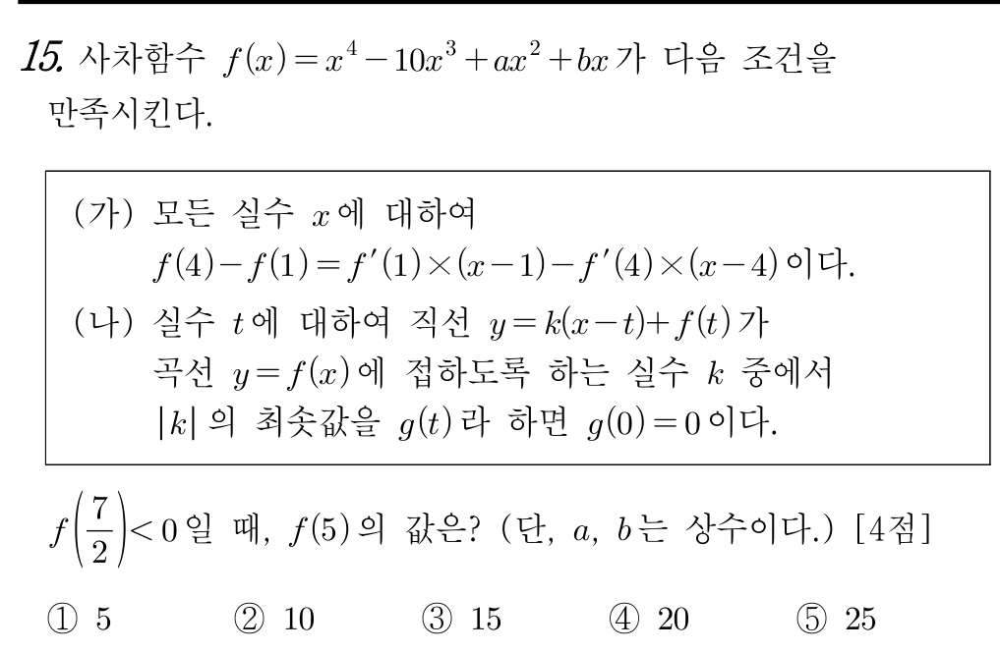

📘 [2026학년도 10월 고3 15번] 사차함수의 이중접선 항등식과 원점을 지나는 직선의 교점 개수📘 [2026 AY Oct Exam Grade 12 #15] Quartic Function Bitangent Identity and Intersection Count with Lines Through the Origin
초등학생도 1단계부터 차근차근 따라가면 수능·학력평가 본문항까지 스스로 풀 수 있는 단계별 디딤돌 퀴즈입니다.Elementary-to-advanced step-by-step scaffolding quiz. Instant scoring & explanations upon selection.

📋 원본 문항 핵심 요약 및 목표📋 Official Problem Summary & Objectives
사차함수의 이중접선 항등식과 원점을 지나는 직선의 교점 개수
조건 (가)에서 $x=1, 4$에서의 이중접선을 파악하고 조건 (나)의 접선 조건으로 $f(x)=x(x-3)^2(x-4)$ 결정하기
수학자료실의 PDF 자료는 페이지를 넘길 때마다 미분계수가 탄생하는 극한의 전 과정이 생생하게 드러납니다.
• [초기 상태] 곡선 $y=f(x)$ 위의 고정점 $\mathrm{P}(a, f(a))$와 멀리 떨어진 동점 $\mathrm{Q}(x, f(x))$를 잇는 초록색 할선(Secant)의 평균변화율 $\frac{f(x)-f(a)}{x-a}$을 그립니다.
• [프레임의 연속 이동] $x \to a$로 접근함에 따라, 곡선을 타고 미끄러지는 동점 $\mathrm{Q}$와 함께 초록색 할선이 연속적으로 회전합니다.
• [극한의 합일] 마지막 순간, 초록색 할선이 빨간색 접선(Tangent)과 일치하며 순간변화율 $m = \lim_{x\to a}\frac{f(x)-f(a)}{x-a}$에 도달합니다.
• [수학적 의미] 미분은 형식적인 수식 연산이 아니라, 두 점 사이의 할선이 한 점에서의 접선으로 녹아드는 기하학적 수렴 과정임을 하단 자료로 확인해 보세요.
The archive's flipbook proof materials demonstrate how fundamental mathematical principles converge smoothly frame by frame. Explore the interactive dynamic geometry applets below.
🔰 제0단계 · 수학 기호 번역기🔰 Step 0 · Mathematical Symbol Translator
🔰 1단계 · [초등 영(0) 만들기 규칙] 모든 $x$에 대해 $Ax + B = C$가 성립할 조건🔰 Step 1 · [Elementary Zero Rule] Condition for $Ax + B = C$ to hold for all $x$
먼저 알아야 할 지식
초등학교에서 어떤 수 $x$를 넣어도 $A \times x + B$의 값이 항상 일정하려면, $x$에 곱해지는 수 $A$가 반드시 $0$이어야 합니다!🌿 2단계 · [기울기 비교와 이중접선] $f'(1) = f'(4) = m$일 때 상수항 비교하기🌿 Step 2 · [Bitangent Slope] Comparing constant terms when $f'(1) = f'(4) = m$
먼저 알아야 할 지식
1단계에서 $f'(1) = f'(4) = m$이라 놓으면, 조건 (가)의 우변은 $0 \cdot x - m + 4m = 3m$이 됩니다! 즉 $f(4) - f(1) = 3m \implies \dfrac{f(4) - f(1)}{4 - 1} = f'(1) = f'(4) = m$이므로, 두 점 $(1, f(1))$과 $(4, f(4))$를 잇는 직선 $L(x)$는 $x = 1$과 $x = 4$에서 곡선 $y = f(x)$에 동시에 접하는 이중접선입니다!🌱 3단계 · [다항식 전개와 $f(0) = 0$ 적용] $f(x) = x(x^3 - 10x^2 + 33x + b)$ 꼴 유도하기🌱 Step 3 · [Expanding & Using $f(0) = 0$] Writing $f(x) = x(x^3 - 10x^2 + 33x + b)$
먼저 알아야 할 지식
$(x-1)(x-4) = x^2 - 5x + 4$를 제곱하면:$$(x^2 - 5x + 4)^2 = x^4 - 10x^3 + 33x^2 - 40x + 16$$여기에 일차함수 $L(x)$를 더하고 $f(0) = 0$ 조건(상수항이 $0$)을 적용하면 일차항의 계수만 미지수 $b$로 남아 $f(x) = x^4 - 10x^3 + 33x^2 + bx = x(x^3 - 10x^2 + 33x + b)$가 됩니다!🌱 4단계 · [삼차함수 $P(x)$의 극점 찾기] $P'(x) = 3x^2 - 20x + 33 = 0$ 인수분해하기🌱 Step 4 · [Extrema of $P(x)$] Factoring $P'(x) = 3x^2 - 20x + 33 = 0$
먼저 알아야 할 지식
가로선 $y = k$를 위아래로 움직일 때 삼차함수 $y = P(x) = x^3 - 10x^2 + 33x + b$와의 교점 개수가 갑자기 바뀌는(불연속이 되는) 순간은 바로 $y = k$가 $P(x)$의 극대점 또는 극소점을 지날 때입니다! 이를 위해 $P'(x) = 3x^2 - 20x + 33$을 인수분해해 봅시다.🌳 5단계 · [조건 (나) $g(0) = 0$과 부호 조건] $P(3) = 0$으로 상수 $b$ 구하기🌳 Step 5 · [Condition (나) & Sign Check] Using $P(3) = 0$ to find $b = -36$
먼저 알아야 할 지식
문제에서 $f\left(\dfrac{7}{2}\right) < 0$이라고 했습니다. $\dfrac{7}{2} = 3.5$는 $3$과 $\dfrac{11}{3} \approx 3.67$ 사이의 수입니다!- 만약 극솟값 $P\left(\frac{11}{3}\right) = 0$이면, 모든 $x > 0$에서 $P(x) \ge 0$이 되어 $f\left(\frac{7}{2}\right) > 0$이 되므로 모순입니다!
- 따라서 극댓값 $P(3) = 0$이어야 하며, 이때 $k = 0$($g(0) = 0$)에서 접선이 되어 불연속이 되고 $f\left(\frac{7}{2}\right) < 0$도 완벽히 성립합니다!
🌳 6단계 · [$f(x)$ 인수분해 완성] $f(x) = x(x-3)^2(x-4)$로 나타내기🌳 Step 6 · [Factoring $f(x)$] Writing $f(x) = x(x-3)^2(x-4)$
먼저 알아야 할 지식
$b = -36$일 때 $P(x) = x^3 - 10x^2 + 33x - 36$은 $x = 3$에서 극대이자 $0$이므로 $(x - 3)^2$을 인수로 가집니다! 최고차항과 상수항($-36 = 9 \times (-4)$)을 비교하면 $P(x) = (x - 3)^2(x - 4)$가 되어, 드디어 사차함수 $f(x)$가 완성됩니다:$$f(x) = x(x - 3)^2(x - 4)$$💎 7단계 · [$x = 5$ 대입 준비] $(5 - 3)^2$과 $(5 - 4)$ 계산하기💎 Step 7 · [Substituting $x = 5$] Computing $(5 - 3)^2$ and $(5 - 4)$
먼저 알아야 할 지식
이제 $f(x) = x(x - 3)^2(x - 4)$에 $x = 5$를 대입하여 각 인수의 값을 구합니다.🏆 8단계 · [최종 정답 완성] $f(5) = 5 \times 4$ 계산하기🏆 Step 8 · [Final Synthesis] Evaluating $f(5) = 5 \times 4$
먼저 알아야 할 지식
앞의 $x = 5$와 7단계에서 구한 $4$를 곱하면 최종 정답 $f(5) = 20$이 완성됩니다.📘 mathedu
📝 먼저 이름을 입력하세요
이름을 입력해야 학습 기록이 저장됩니다.Your learning progress will be saved under this name.
🎯 최종 문제 + 상세 풀이🎯 Final Official Exam Problem & Complete Solution
📋 [문제 분석 및 핵심 출제 의도]
본 문항은 공통 객관식 킬러(15번) 문항으로, 항등식을 통한 사차함수의 이중접선 추론과 원점을 지나는 직선과의 교점 개수 불연속점(접선의 기울기)을 결합한 고난도 문제입니다.
🎨 [그림으로 이해하는 시각적 도형·개념 다이어그램]
🗺️ [한눈에 보는 도식화 풀이 흐름도 (Schematic Solution Flowchart)]
| STEP 1 · 출발 조건🔰 1단계 · [초등 영(0) 만들기 규칙] 모든 $x$에 대해 $Ax + B = C$가 성립할 조건 ⇒ $0$ | ➔ | STEP 2 · 도형·공식 변환🌱 3단계 · [다항식 전개와 $f(0) = 0$ 적용] $f(x) = x(x^3 - 10x^2 + 33x + b)$ 꼴 유도하기 ⇒ $k$ | ➔ | STEP 3 · 핵심 식 도출🌳 6단계 · [$f(x)$ 인수분해 완성] $f(x) = x(x-3)^2(x-4)$로 나타내기 ⇒ $-\frac{1}{2}$ | ➔ | STEP 4 · 결합 및 계산🏆 8단계 · [최종 정답 완성] $f(5) = 5 \times 4$ 계산하기 ⇒ $20$ | ⇒ | 🎯 최종 정답$20$ |
📐 [단계별 상세 풀이 전개]
1단계: 조건 (가)의 항등식 해석 (이중접선)
조건 (가)가 모든 실수 $x$에 대하여 성립하므로 $x$의 계수는 $0$이어야 합니다:
$$f'(1) - f'(4) = 0 \implies f'(1) = f'(4) = m$$
이를 상수항에 대입하면 $f(4) - f(1) = 3m \implies \frac{f(4) - f(1)}{4 - 1} = f'(1) = f'(4) = m$입니다.
즉, 직선 $L(x) = m(x-1) + f(1)$은 곡선 $y = f(x)$에 $x = 1$과 $x = 4$에서 동시에 접하는 이중접선입니다.
따라서 최고차항의 계수가 $1$이고 $f(0) = 0$이므로:
$$f(x) = (x-1)^2(x-4)^2 + mx - 16 = x^4 - 10x^3 + 33x^2 + bx = x(x^3 - 10x^2 + 33x + b)$$
2단계: 조건 (나)의 불연속 기울기 해석
원점을 지나는 직선 $y = kx$와 $y = f(x)$의 교점의 개수 $h(k)$는 $x(x^3 - 10x^2 + 33x + b - k) = 0$의 서로 다른 실근의 개수입니다.
$P(x) = x^3 - 10x^2 + 33x + b$라 하면 $P'(x) = 3x^2 - 20x + 33 = (3x - 11)(x - 3) = 0$에서 극댓값은 $P(3)$, 극솟값은 $P\left(\frac{11}{3}\right)$입니다.
$f\left(\frac{7}{2}\right) < 0$을 만족하면서 $k = 0$에서 불연속이 되려면 $P(3) = 0$이어야 하므로 $b = -36$이고 $f(x) = x(x-3)^2(x-4)$입니다.
🪜 [초등 눈높이 디딤돌 전 단계(1단계~8단계) 완전 연결 상세 해설]
위 디딤돌 문제에서 밟아 온 $1$단계부터 $8$단계까지의 작은 조각들을 순서대로 연결하면 본문항의 풀이가 빈틈없이 완성됩니다.
- 🔰 1단계 · [초등 영(0) 만들기 규칙] 모든 $x$에 대해 $Ax + B = C$가 성립할 조건
• 핵심 개념 및 원리: 초등학교에서 어떤 수 $x$를 넣어도 $A \times x + B$의 값이 항상 일정하려면, $x$에 곱해지는 수 $A$가 반드시 $0$이어야 합니다!
• 단계 확인 정답 ($0$): $x$의 값에 관계없이 등식이 성립하려면 $x$의 계수가 $0$이어야 하므로 $f'(1) - f'(4) = 0$, 즉 $f'(1) = f'(4)$입니다. - 🌿 2단계 · [기울기 비교와 이중접선] $f'(1) = f'(4) = m$일 때 상수항 비교하기
• 핵심 개념 및 원리: 1단계에서 $f'(1) = f'(4) = m$이라 놓으면, 조건 (가)의 우변은 $0 \cdot x - m + 4m = 3m$이 됩니다! 즉 $f(4) - f(1) = 3m \implies \dfrac{f(4) - f(1)}{4 - 1} = f'(1) = f'(4) = m$이므로, 두 점 $(1, f(1))$과 $(4, f(4))$를 잇는 직선 $L(x)$는 $x = 1$과 $x = 4$에서 곡선 $y = f(x)$에 동시에 접하는 이중접선입니다!
• 단계 확인 정답 ($(x-1)^2(x-4)^2$): $x = 1$과 $x = 4$에서 각각 접하므로 $(x-1)^2$과 $(x-4)^2$을 인수로 가져 $f(x) - L(x) = (x-1)^2(x-4)^2$입니다. - 🌱 3단계 · [다항식 전개와 $f(0) = 0$ 적용] $f(x) = x(x^3 - 10x^2 + 33x + b)$ 꼴 유도하기
• 핵심 개념 및 원리: $(x-1)(x-4) = x^2 - 5x + 4$를 제곱하면:$$(x^2 - 5x + 4)^2 = x^4 - 10x^3 + 33x^2 - 40x + 16$$여기에 일차함수 $L(x)$를 더하고 $f(0) = 0$ 조건(상수항이 $0$)을 적용하면 일차항의 계수만 미지수 $b$로 남아 $f(x) = x^4 - 10x^3 + 33x^2 + bx = x(x^3 - 10x^2 + 33x + b)$가 됩니다!
• 단계 확인 정답 ($k$): $x \neq 0$일 때 $x^3 - 10x^2 + 33x + b = k$, 즉 삼차함수 $y = P(x)$와 가로선 $y = k$의 교점이 됩니다! - 🌱 4단계 · [삼차함수 $P(x)$의 극점 찾기] $P'(x) = 3x^2 - 20x + 33 = 0$ 인수분해하기
• 핵심 개념 및 원리: 가로선 $y = k$를 위아래로 움직일 때 삼차함수 $y = P(x) = x^3 - 10x^2 + 33x + b$와의 교점 개수가 갑자기 바뀌는(불연속이 되는) 순간은 바로 $y = k$가 $P(x)$의 극대점 또는 극소점을 지날 때입니다! 이를 위해 $P'(x) = 3x^2 - 20x + 33$을 인수분해해 봅시다.
• 단계 확인 정답 ($3$): $3x^2 - 20x + 33 = (3x - 11)(x - 3) = 0$이므로 $x = 3$(극대)과 $x = \frac{11}{3}$(극소)에서 극값을 가집니다. - 🌳 5단계 · [조건 (나) $g(0) = 0$과 부호 조건] $P(3) = 0$으로 상수 $b$ 구하기
• 핵심 개념 및 원리: 문제에서 $f\left(\dfrac{7}{2}\right) < 0$이라고 했습니다. $\dfrac{7}{2} = 3.5$는 $3$과 $\dfrac{11}{3} \approx 3.67$ 사이의 수입니다!- 만약 극솟값 $P\left(\frac{11}{3}\right) = 0$이면, 모든 $x > 0$에서 $P(x) \ge 0$이 되어 $f\left(\frac{7}{2}\right) > 0$이 되므로 모순입니다!
- 따라서 극댓값 $P(3) = 0$이어야 하며, 이때 $k = 0$($g(0) = 0$)에서 접선이 되어 불연속이 되고 $f\left(\frac{7}{2}\right) < 0$도 완벽히 성립합니다!
• 단계 확인 정답 ($-36$): $27 - 90 + 99 = 36$이므로 $36 + b = 0 \implies b = -36$입니다. - 🌳 6단계 · [$f(x)$ 인수분해 완성] $f(x) = x(x-3)^2(x-4)$로 나타내기
• 핵심 개념 및 원리: $b = -36$일 때 $P(x) = x^3 - 10x^2 + 33x - 36$은 $x = 3$에서 극대이자 $0$이므로 $(x - 3)^2$을 인수로 가집니다! 최고차항과 상수항($-36 = 9 \times (-4)$)을 비교하면 $P(x) = (x - 3)^2(x - 4)$가 되어, 드디어 사차함수 $f(x)$가 완성됩니다:$$f(x) = x(x - 3)^2(x - 4)$$
• 단계 확인 정답 ($-\frac{1}{2}$): $\frac{7}{2} - \frac{8}{2} = -\frac{1}{2} < 0$이므로 $f\left(\frac{7}{2}\right) = \frac{7}{2} \times \frac{1}{4} \times \left(-\frac{1}{2}\right) = -\frac{7}{16} < 0$이 성립합니다! - 💎 7단계 · [$x = 5$ 대입 준비] $(5 - 3)^2$과 $(5 - 4)$ 계산하기
• 핵심 개념 및 원리: 이제 $f(x) = x(x - 3)^2(x - 4)$에 $x = 5$를 대입하여 각 인수의 값을 구합니다.
• 단계 확인 정답 ($4$): $(5 - 3)^2 \times (5 - 4) = 2^2 \times 1 = 4$입니다. - 🏆 8단계 · [최종 정답 완성] $f(5) = 5 \times 4$ 계산하기
• 핵심 개념 및 원리: 앞의 $x = 5$와 7단계에서 구한 $4$를 곱하면 최종 정답 $f(5) = 20$이 완성됩니다.
• 단계 확인 정답 ($20$): $f(5) = 5 \times (5-3)^2 \times (5-4) = 5 \times 4 \times 1 = 20$이므로 정답은 ④입니다.
✨ [정답 도출 및 실전 점검 포인트]
따라서 $f(x) = x(x-3)^2(x-4)$이므로:
$$f(5) = 5 \times (5-3)^2 \times (5-4) = 5 \times 4 \times 1 = 20$$
정답은 ④번입니다.
📋 [Problem Analysis & Core Concepts]
This problem combines bitangent properties of quartic functions with discontinuities in the number of intersections with lines through the origin.
🎨 [Visual Geometric & Conceptual Diagram]
🗺️ [At-a-Glance Schematic Solution Flowchart]
| STEP 1 · Given Condition🔰 Step 1 · [Elementary Zero Rule] Condition for $Ax + B = C$ to hold for all $x$ ⇒ $0$ | ➔ | STEP 2 · Visual/Formula Transform🌱 Step 3 · [Expanding & Using $f(0) = 0$] Writing $f(x) = x(x^3 - 10x^2 + 33x + b)$ ⇒ $k$ | ➔ | STEP 3 · Key Derivation🌳 Step 6 · [Factoring $f(x)$] Writing $f(x) = x(x-3)^2(x-4)$ ⇒ $-\frac{1}{2}$ | ➔ | STEP 4 · Synthesis🏆 Step 8 · [Final Synthesis] Evaluating $f(5) = 5 \times 4$ ⇒ $20$ | ⇒ | 🎯 최종 정답$20$ |
📐 [Step-by-Step Rigorous Derivation]
Step 1: Bitangent from Condition (가)
Since (가) holds for all $x$, $f'(1) = f'(4) = \frac{f(4)-f(1)}{3}$, meaning $y=f(x)$ has a bitangent at $x=1$ and $x=4$. Using $f(0)=0$:
$$f(x) = (x-1)^2(x-4)^2 + mx - 16 = x(x^3 - 10x^2 + 33x + b)$$
Step 2: Tangency at $k = 0$ from Condition (나)
For $h(k)$ to jump at $k=0$, $P(x) = x^3 - 10x^2 + 33x + b = 0$ must have a double root at an extremum. Since $P'(x) = (3x-11)(x-3)$ and $f(7/2) < 0$, the double root is at $x = 3$, giving $b = -36$ and $f(x) = x(x-3)^2(x-4)$.
🪜 [Complete Step-by-Step Scaffolding Walkthrough (Steps 1–8)]
Connecting each elementary-grounded scaffolding step from Step 1 to Step 8 completes the entire derivation without any logical gaps:
- 🔰 Step 1 · [Elementary Zero Rule] Condition for $Ax + B = C$ to hold for all $x$
• Core Principle: By elementary arithmetic, for $A \times x + B$ to remain constant regardless of $x$, the multiplier $A$ must be $0$.
• Step Verification ($0$): The coefficient of $x$ must vanish, so $f'(1) - f'(4) = 0$. - 🌿 Step 2 · [Bitangent Slope] Comparing constant terms when $f'(1) = f'(4) = m$
• Core Principle: Setting $f'(1) = f'(4) = m$ reduces (가) to $f(4) - f(1) = 3m$, so the secant line through $x=1$ and $x=4$ has slope $m = f'(1) = f'(4)$ and is a bitangent line $L(x)$!
• Step Verification ($(x-1)^2(x-4)^2$): Tangency at both points gives double roots at $1$ and $4$: $(x-1)^2(x-4)^2$. - 🌱 Step 3 · [Expanding & Using $f(0) = 0$] Writing $f(x) = x(x^3 - 10x^2 + 33x + b)$
• Core Principle: Expanding $(x^2 - 5x + 4)^2 = x^4 - 10x^3 + 33x^2 - 40x + 16$ and adding the linear function $L(x)$ with $f(0) = 0$ leaves $f(x) = x^4 - 10x^3 + 33x^2 + bx = x(x^3 - 10x^2 + 33x + b)$.
• Step Verification ($k$): For $x \neq 0$, $P(x) = k$. - 🌱 Step 4 · [Extrema of $P(x)$] Factoring $P'(x) = 3x^2 - 20x + 33 = 0$
• Core Principle: The number of intersections between $y = P(x)$ and the horizontal line $y = k$ jumps when $k$ equals a local extremum of $P(x)$. Differentiating gives $P'(x) = 3x^2 - 20x + 33$.
• Step Verification ($3$): $3x^2 - 20x + 33 = (3x - 11)(x - 3)$, so $c = 3$. - 🌳 Step 5 · [Condition (나) & Sign Check] Using $P(3) = 0$ to find $b = -36$
• Core Principle: Since $\frac{7}{2} = 3.5 \in \left(3, \frac{11}{3}\right)$ and $f\left(\frac{7}{2}\right) < 0$, the local minimum $P\left(\frac{11}{3}\right)$ must be negative, so the local maximum must satisfy $P(3) = 0$ (making $g(0) = 0$).
• Step Verification ($-36$): $36 + b = 0 \implies b = -36$. - 🌳 Step 6 · [Factoring $f(x)$] Writing $f(x) = x(x-3)^2(x-4)$
• Core Principle: Since $P(3) = P'(3) = 0$, $(x-3)^2$ divides $P(x) = x^3 - 10x^2 + 33x - 36$, giving $P(x) = (x-3)^2(x-4)$ and $f(x) = x(x-3)^2(x-4)$.
• Step Verification ($-\frac{1}{2}$): $\frac{7}{2} - 4 = -\frac{1}{2} < 0$, confirming $f(7/2) < 0$. - 💎 Step 7 · [Substituting $x = 5$] Computing $(5 - 3)^2$ and $(5 - 4)$
• Core Principle: Substitute $x = 5$ into each factor of $f(x) = x(x - 3)^2(x - 4)$.
• Step Verification ($4$): $2^2 \times 1 = 4$. - 🏆 Step 8 · [Final Synthesis] Evaluating $f(5) = 5 \times 4$
• Core Principle: Multiply $x = 5$ by $4$ to obtain $f(5) = 20$.
• Step Verification ($20$): $f(5) = 20$ (choice ④).
✨ [Final Answer & Practical Tips]
Evaluating at $x = 5$ gives $f(5) = 5(2)^2(1) = 20$, which is choice ④.
(가) 모든 실수 $x$에 대하여 $f(4) - f(1) = \{f'(1) - f'(4)\}x - f'(1) + 4f'(4)$ 이다.
(나) 실수 $t$에 대하여 곡선 $y = f(x)$와 직선 $y = kx$의 교점의 개수를 $h(k)$라 할 때, $\lim_{k \to t-} h(k) \neq \lim_{k \to t+} h(k)$를 만족시키는 모든 실수 $t$를 작은 수부터 크기순으로 나열한 것을 $g(0), g(1), \cdots, g(m)$ ($m$은 자연수)라 하면 $g(0) = 0$이다.
(가) $f(4) - f(1) = \{f'(1) - f'(4)\}x - f'(1) + 4f'(4)$ for all real $x$.
(나) Let $h(k)$ be the number of intersections between $y = f(x)$ and $y = kx$. Listing all $t$ where $\lim_{k \to t-} h(k) \neq \lim_{k \to t+} h(k)$ in increasing order as $g(0), g(1), \dots, g(m)$ gives $g(0) = 0$.
What is the value of $f(5)$? [4 points]
 📚 수학자료실 공식 연계 심층 탐구
📚 수학자료실 공식 연계 심층 탐구
이 문제와 관련된 수학적 원리를 수학자료실의 시각적 동적 기하 조작 및 원리 증명 자료와 함께 더 깊이 탐구해보세요.
🎉 완료!🎉 Completed!